Darning is a way of mending holes in fabric by weaving new thread across the hole. It is very easy, doesn't take too long and is much better than throwing clothes away.
I tried darning a sock once before (absolute failure) but tried once more on some holes in some favourite jeans and I'm pretty happy with the result. There are still some giant holes in the knees but I think I'll need to cannibalise some other jeans to get material for a patch.
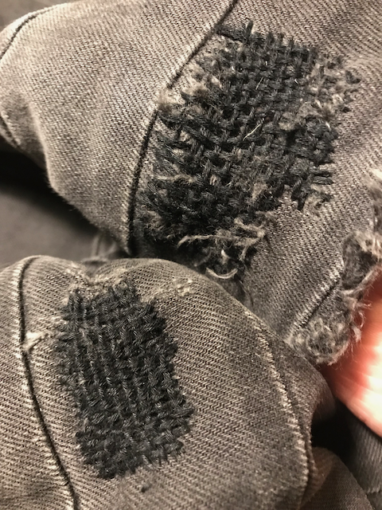Above: noticeable improvement between my first and second repairs to these jeans.
I used a sashiko needle, which is long and thin. A longer needle is a less manoeuvrable, but you can weave the needle in and out further across the fabric or the darning area before you have to pull it through. A thinner needle is harder to thread but it doesn't force big holes in the fabric. Perhaps needle thickness can be matched to the thread? I think avoid needles with a very wide eye, relative to the rest of the needle - it tugs at the fabric a lot when you pull it through.
I used some embroidery thread, which is quite thick. Thinner thread would mean a lot of darning to cover the same area.
I didn't use one. I did stab myself in the finger tip once.
Cut off half a metre of thread or less. You'll waste more time pulling a long piece of thread through than you will spend threading a new piece of thread.
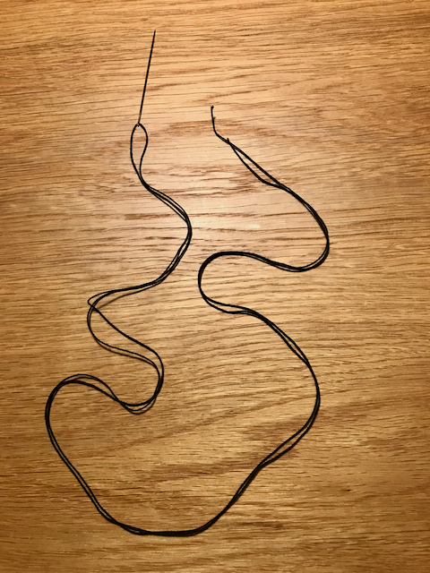Because I was darning jeans, I doubled the thread over by pulling it through half way. I figured this would give the darning some redundancy and make it last longer. Otherwise, you only need to thread 5cm or so through the eye.
Tie a knot in the tail of the thread (tying both threads together, if you've doubled up the thread). This is to stop the thread pulling through when you start off. I used a Surgeon's Knot, but this is not a very good knot because it can capsize.
You are going to sew rows of thread, all lined up very close together, starting on one side of the whole and working your way across to the other.
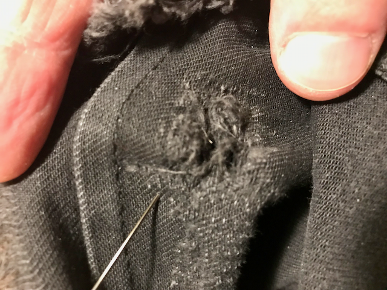Start from the underside/inside of the fabric so that the knot is hidden from view. You want to start a little bit back and to the side of the hole, not right against it.
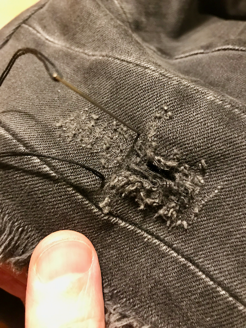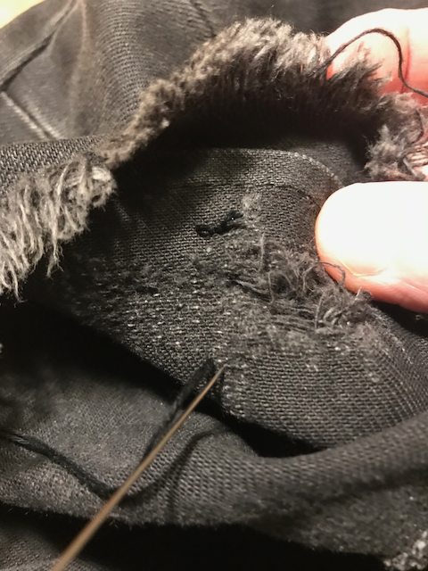Pull all the thread through, then insert the needle down over other side of the hole you're mending. Once you've pulled that through the back, you can come back up again just next to that.
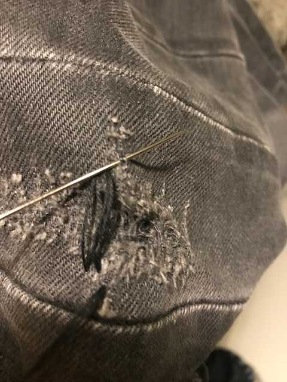You can actually do this in a single step by weaving the needle tip in and back out before pulling the whole lot through.
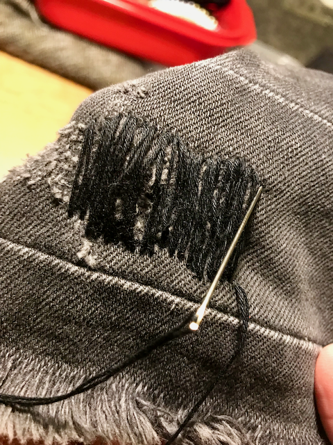Keep going all the way across in parallel lines.
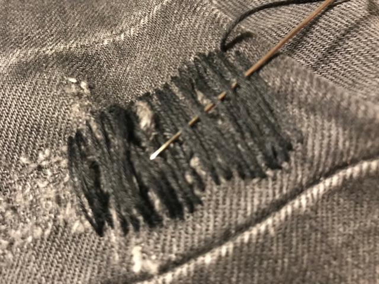Once you've covered the hole in one direction, you repeat the process going the other way. This time, however, you need to weave the thread under and over the lines you've already made. You'll still be threading the needle in and back out again at each end.
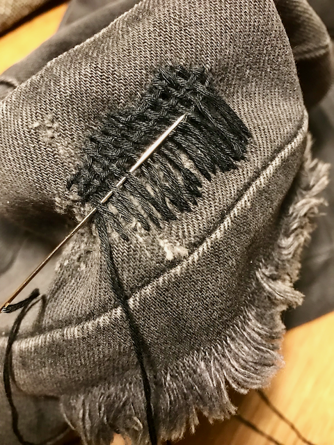 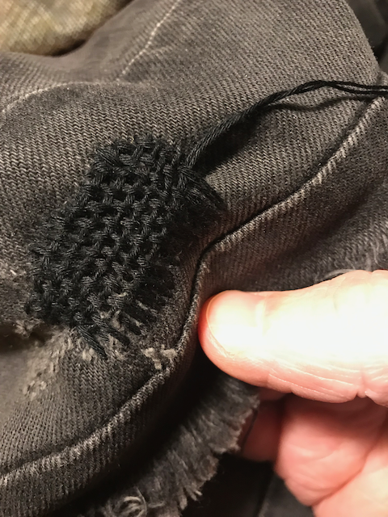 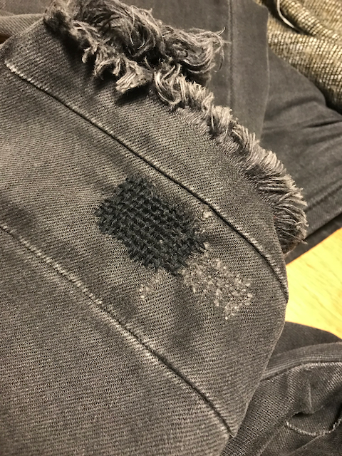That's it!
Bigger holes are probably better patched. I'll update this when I'm done.